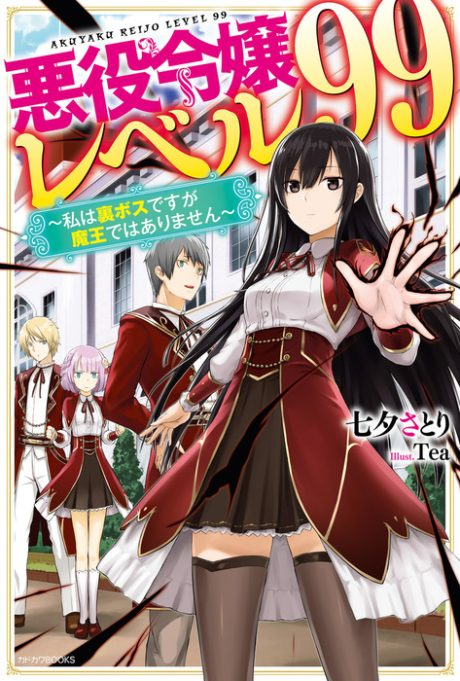
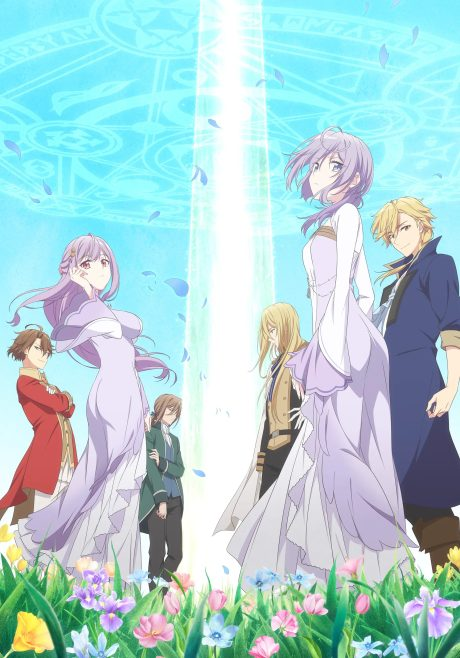

Villainess Level 99: I May Be the Hidden Boss but I'm Not the Demon Lord
悪役令嬢レベル99 ～私は裏ボスですが魔王ではありません～
Yumiella, the hidden villainess of a game, levels up so much that she's mistaken for the Demon Lord.
After the anime, read the light novel from Volume 2.
7.1AniList score
—Animeter, no votes yet
12episodes
Rate it or report where you stopped
Anime finished. Where does the story go next?
Start at Volume2
The anime covers the first light novel; start at volume 2.
More like Villainess Level 99: I May Be the Hidden Boss but I'm Not the Demon Lord
 Manga Ch. 177.2
Manga Ch. 177.2

Unclear7.2 Manga Vol. 48.1
Manga Vol. 48.1
 Unclear7.1
Unclear7.1
 Unclear7.7
Unclear7.7
 Manga Ch. 718.3
Manga Ch. 718.3